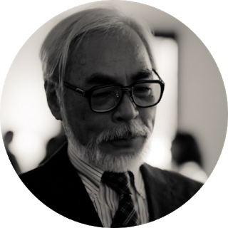

Hayao Miyazaki’s breathtaking animated storytelling has garnered him recognition amongst circles of international critics as well as the global public. The widespread appreciation for his films has led to him to become one of Japan's “national treasures."

BIOGRAPHY
Miyazaki was born on January 5, 1941 in Tokyo, Japan. In 1963, at the age of 22, he joined Toei Animation which kickstarted his career. He began as an “in-between artist”, animating key-frames between images to ensure smooth transitions. During this time, he also worked with director Isao Takahata who would later become a partner in founding Studio Ghibli. While at Toei, he went on to contribute key animation to a number of films including The Wonderful World of Puss ‘n Boots (1969), and Animal Treasure Island (1971).
In 1971, Miyazaki moved to A Production, co-directing the Japanese anime television series Lupin the Third Part I (1971-2) with Takahata. In 1973, Miyazaki worked for Zuirō Eizō - now known as Nippon Animation - as both an animator and director. Then after joining Telecom Animation Film (Tokyo Movie Shinsha), Miyazaki directed his first feature film, The Castle of Cagliostro (1979), which was followed by one of his most well-known films to-date: Nausicaä of the Valley of the Wind (1984).
In 1985, Miyazaki co-founded Studio Ghibli in Tokyo, creating much of the work that he is most associated with today. These films such as Castle in the Sky (1986), My Neighbor Totoro (1988), Kiki’s Delivery Service (1989), Princess Mononoke (1997), Spirited Away (2001), Howl’s Moving Castle (2004) and more, have experienced wide critical and commercial success on an international scale. Princess Mononoke was the first animated film to win the coveted Japan Academy Prize for Picture of the year and Spirited Away became the highest-grossing film in Japan when it debuted in 2001, leading to the Academy Award for Best Animated Feature at the 75th Academy Awards.
THEMES
Those well versed in the work of Miyazaki can attest to the presence of powerful, reoccurring themes in his work. These often involve humanity’s relationship with nature and technology. His work is full of dynamic tensions and beautiful contradiction.
Some themes embody the struggle between pacifist views and the violent realities of the world, but also the peaceful coexistence that can come out of the devastation of the violence. His films feature nature’s purity and sacred importance that lingers in Japanese beliefs as well as the contrasting potential for nature to exhibit terrifying power through massive sea storms (Ponyo), mutant insects (Mononoke), and devastating earthquakes (Wind Rises). In creating a new aesthetic characterized by East Asian sensibility and values, Miyazaki’s style defies the narrowness of a teen-oriented Japanese anime genre as well as what Sugita Shunsuke for Nippon.com refers to as the “cultural homogeneity of globalization (as embodied in the Disney style of animation).”